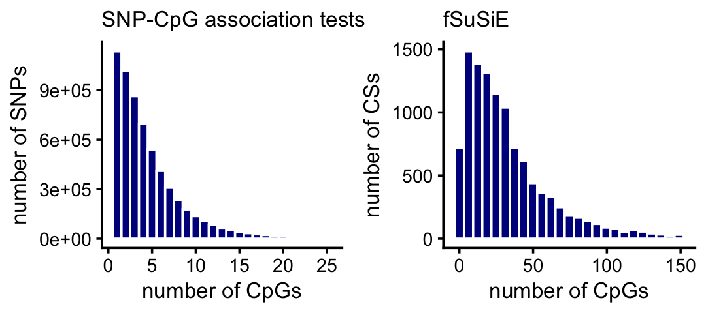

Examine methylation and H3K27ac fine-mapping results from the ROSMAP data
William Denault, Hao Sun, Angjing Liu, Peter Carbonetto, Gao Wang
Last updated: 2025-04-25
Checks: 5 2
Knit directory:
fsusie-experiments/analysis/
This reproducible R Markdown analysis was created with workflowr (version 1.7.1). The Checks tab describes the reproducibility checks that were applied when the results were created. The Past versions tab lists the development history.
The R Markdown file has unstaged changes. To know which version of
the R Markdown file created these results, you’ll want to first commit
it to the Git repo. If you’re still working on the analysis, you can
ignore this warning. When you’re finished, you can run
wflow_publish to commit the R Markdown file and build the
HTML.
Great job! The global environment was empty. Objects defined in the global environment can affect the analysis in your R Markdown file in unknown ways. For reproduciblity it’s best to always run the code in an empty environment.
The command set.seed(1) was run prior to running the
code in the R Markdown file. Setting a seed ensures that any results
that rely on randomness, e.g. subsampling or permutations, are
reproducible.
Great job! Recording the operating system, R version, and package versions is critical for reproducibility.
- get-cpgs-per-tad-assoc
- remove-duplicated-cs-ha
- remove-duplicated-cs-methyl
To ensure reproducibility of the results, delete the cache directory
rosmap_overview_cache and re-run the analysis. To have
workflowr automatically delete the cache directory prior to building the
file, set delete_cache = TRUE when running
wflow_build() or wflow_publish().
Great job! Using relative paths to the files within your workflowr project makes it easier to run your code on other machines.
Great! You are using Git for version control. Tracking code development and connecting the code version to the results is critical for reproducibility.
The results in this page were generated with repository version 748b8b0. See the Past versions tab to see a history of the changes made to the R Markdown and HTML files.
Note that you need to be careful to ensure that all relevant files for
the analysis have been committed to Git prior to generating the results
(you can use wflow_publish or
wflow_git_commit). workflowr only checks the R Markdown
file, but you know if there are other scripts or data files that it
depends on. Below is the status of the Git repository when the results
were generated:
Untracked files:
Untracked: analysis/affected_cpgs_per_snp.pdf
Untracked: analysis/affected_cpgs_per_tad.pdf
Untracked: analysis/affected_peaks_per_snp.pdf
Untracked: analysis/affected_peaks_per_tad.pdf
Untracked: analysis/cs_per_tad_scatterplot_h3k27ac.pdf
Untracked: analysis/cs_per_tad_scatterplot_methyl.pdf
Untracked: analysis/cs_sizes_h3k27ac.pdf
Untracked: analysis/cs_sizes_methyl.pdf
Untracked: analysis/dist_to_tss_h3k27ac.pdf
Untracked: analysis/dist_to_tss_methyl.pdf
Untracked: analysis/rosmap.afreq
Untracked: analysis/rosmap_overview_cache/
Untracked: analysis/tad_sizes_histogram.pdf
Untracked: analysis/temp1.txt
Untracked: analysis/temp2.txt
Untracked: data/ROSMAP_NIA_WGS.leftnorm.bcftools_qc.plink_qc.afreq.gz
Untracked: data/analysis_result/Fungen_xQTL.ENSG00000163808.cis_results_db.export.rds
Untracked: data/analysis_result/ROSMAP_haQTL.chr3_43915257_48413435.fsusie_mixture_normal_top_pc_weights.rds
Untracked: data/analysis_result/ROSMAP_mQTL.chr3_43915257_48413435.fsusie_mixture_normal_top_pc_weights.rds
Untracked: outputs/CASS4_obj.RData
Untracked: outputs/CD2AP_all_effects.RData
Untracked: outputs/CD2AP_obj.RData
Untracked: outputs/CR1_CR2_all_effects.RData
Untracked: outputs/CR1_CR2_obj.RData
Untracked: outputs/ROSMAP_haQTL_cs_effect_ha_peak_annotation.tsv.gz
Untracked: outputs/ROSMAP_haQTL_cs_snp_annotation.tsv.gz
Untracked: outputs/ROSMAP_haQTL_cs_snp_toppc1_annotation.tsv.gz
Untracked: outputs/ROSMAP_haQTL_qtl_snp_qval0.05.tsv.gz
Untracked: outputs/ROSMAP_haQTL_qtl_snp_qval0.05_annotation.tsv.gz
Untracked: outputs/ROSMAP_mQTL_cs_effect_cpg_annotation.tsv.gz
Untracked: outputs/ROSMAP_mQTL_cs_snp_annotation.tsv.gz
Untracked: outputs/ROSMAP_mQTL_cs_snp_toppc1_annotation.tsv.gz
Untracked: outputs/ROSMAP_mQTL_qtl_snp_qval0.05.tsv.gz
Untracked: outputs/ROSMAP_mQTL_qtl_snp_qval0.05_annotation.tsv.gz
Unstaged changes:
Modified: analysis/rosmap_overview.Rmd
Note that any generated files, e.g. HTML, png, CSS, etc., are not included in this status report because it is ok for generated content to have uncommitted changes.
These are the previous versions of the repository in which changes were
made to the R Markdown (analysis/rosmap_overview.Rmd) and
HTML (docs/rosmap_overview.html) files. If you’ve
configured a remote Git repository (see ?wflow_git_remote),
click on the hyperlinks in the table below to view the files as they
were in that past version.
| File | Version | Author | Date | Message |
|---|---|---|---|---|
| Rmd | 748b8b0 | Peter Carbonetto | 2025-04-25 | Added more detailed analysis of the 1-SNP CSs for methylation in rosmap_overview.Rmd. |
| Rmd | 9dad9a9 | Peter Carbonetto | 2025-04-24 | Working on additional steps to identify and remove blacklisted mSNPs. |
| html | dade7d2 | Peter Carbonetto | 2025-04-16 | Ran workflowr::wflow_publish("rosmap_overview.Rmd"). |
| Rmd | 14e4487 | Peter Carbonetto | 2025-04-16 | Updated the plot in rosmap_overview.Rmd showing num. peaks vs. num. CSs for fSusiE H3K27ac results. |
| Rmd | 1fd676e | Peter Carbonetto | 2025-04-16 | Added step to rosmap_overview analysis to remove duplicate CSs for H3K27ac. |
| Rmd | cdc55a2 | Peter Carbonetto | 2025-04-16 | Fixed histogram showing no. cpgs vs. no. CSs in rosmap_overview.Rmd. |
| Rmd | 2c0d574 | Peter Carbonetto | 2025-04-16 | Small fix to the CS size histograms for the methylation results in rosmap_overview.Rmd. |
| Rmd | e1fe364 | Peter Carbonetto | 2025-04-04 | I have the CD2AP zoom-in plot mostly done except for the panel showing the raw data (beta values). |
| Rmd | 46d0b35 | Peter Carbonetto | 2025-04-04 | Removed some code in the rosmap_overview.Rmd analysis into a separate code chunk. |
| Rmd | 9416011 | Peter Carbonetto | 2025-04-04 | Added function create_cs_maps() to help remove ‘duplicated’ CSs. |
| Rmd | 618cae4 | Peter Carbonetto | 2025-04-03 | A few fixes to the CR1 eQTL panel. |
| html | 618cae4 | Peter Carbonetto | 2025-04-03 | A few fixes to the CR1 eQTL panel. |
| html | 3bb4ba0 | Peter Carbonetto | 2025-03-28 | Ran wflow_publish("rosmap_overview.Rmd"). |
| Rmd | dcece5b | Peter Carbonetto | 2025-03-28 | Added code chunks to rosmap_overview.Rmd to save some more plots to PDF. |
| Rmd | a70588c | Peter Carbonetto | 2025-03-28 | Added code chunks to rosmap_overview.Rmd to save a couple plots to PDFs. |
| html | c079568 | Peter Carbonetto | 2025-03-27 | Ran wflow_publish("rosmap_overview.Rmd"). |
| Rmd | 2bd0de3 | Peter Carbonetto | 2025-03-27 | wflow_publish("rosmap_overview.Rmd", verbose = TRUE, view = FALSE) |
| Rmd | 53d4a33 | Peter Carbonetto | 2025-03-27 | Added code chunks to rosmap_overview.Rmd for generating PDFs of some of the plots. |
| Rmd | d5c9e37 | Peter Carbonetto | 2025-03-27 | A few fixes to rosmap_overview.Rmd. |
| Rmd | 544235d | Peter Carbonetto | 2025-03-27 | Added code chunks to save some of the plots in the rosmap_overview analysis. |
| html | aece910 | Peter Carbonetto | 2025-03-24 | Ran workflowr::wflow_publish("rosmap_overview.Rmd"). |
| Rmd | 0eb8295 | Peter Carbonetto | 2025-03-24 | wflow_publish("rosmap_overview.Rmd", view = FALSE, verbose = TRUE) |
| Rmd | 6de898e | Peter Carbonetto | 2025-03-24 | Added plots to the rosmap_overview analysis summarizing the recovery of affected H3K27ac peaks. |
| Rmd | 7c8d51d | Peter Carbonetto | 2025-03-24 | Added TSS plot for H3K27ac in rosmap_overview analysis. |
| Rmd | 8e17486 | Peter Carbonetto | 2025-03-24 | Added code to create a plot showing the density of causal SNPs near the closest TSS. |
| Rmd | 18c11b5 | Peter Carbonetto | 2025-03-24 | Added code to rosmap_overview.Rmd to load gene annotations. |
| Rmd | 60bbe23 | Peter Carbonetto | 2025-03-22 | Added a couple notes to the rosmap_summary analysis. |
| Rmd | 00bb89c | Peter Carbonetto | 2025-03-21 | Added note to rosmap_overview.Rmd. |
| Rmd | 7adfd4d | Peter Carbonetto | 2025-03-21 | A few fixes to the rosmap_overview analysis. |
| Rmd | c087a58 | Peter Carbonetto | 2025-03-21 | Added some notes to the rosmap_overview analysis. |
| Rmd | 5e9432b | Peter Carbonetto | 2025-03-21 | Added plots to the rosmap_overview analysis summarizing the affected CpGs identified by fSuSiE and the association tests. |
| Rmd | 593c7e0 | Peter Carbonetto | 2025-03-21 | Added some code for analyzing the HA peak results in the rosmap_overview analysis. |
| Rmd | 12ed0b1 | Peter Carbonetto | 2025-03-21 | Small fix. |
| Rmd | e663ab0 | Peter Carbonetto | 2025-03-21 | Added code to read in HA_peak results in rosmap_overview analysis. |
| html | 71954f1 | Peter Carbonetto | 2025-03-20 | Added plots summarizing H3K27ac results to rosmap_overview analysis. |
| Rmd | 1ad355a | Peter Carbonetto | 2025-03-20 | wflow_publish("rosmap_overview.Rmd", view = FALSE, verbose = TRUE) |
| html | c84e5c0 | Peter Carbonetto | 2025-03-20 | Rebuilt the rosmap_overview analysis with the new results. |
| Rmd | 1c8eeb7 | Peter Carbonetto | 2025-03-20 | wflow_publish("rosmap_overview.Rmd", view = FALSE) |
| Rmd | acfadd1 | Peter Carbonetto | 2025-03-20 | Made a few improvements to the code and text of the rosmap_analysis. |
| Rmd | c102af9 | Peter Carbonetto | 2025-03-20 | Added a scatterplot comparing number of CSs per TAD (susie vs. fsusie). |
| Rmd | 12f2fd3 | Peter Carbonetto | 2025-03-20 | Added some histograms on TAD CS sizes. |
| Rmd | c69e187 | Peter Carbonetto | 2025-03-20 | Created plot showing TAD sizes from the methylation fine-mapping results. |
| Rmd | 2a5c706 | Peter Carbonetto | 2025-03-20 | Added code to the rosmap_overview analysis to load the methylation SNP results. |
| Rmd | c3a01c7 | Peter Carbonetto | 2025-03-20 | Added link for downloading data to rosmap_overview analysis. |
| html | 5c446c0 | Peter Carbonetto | 2025-03-20 | First build of the rosmap_overview analysis. |
| Rmd | 7532908 | Peter Carbonetto | 2025-03-20 | workflowr::wflow_publish("rosmap_overview.Rmd", verbose = TRUE) |
| Rmd | bc6d0a1 | Peter Carbonetto | 2025-03-20 | Started working on rosmap_overview analysis. |
Note: If you would like to run this analysis on your computer, you will first need to download the fine-mapping outputs. They can be downloaded from here. Once you have downloaded the files, copy them to the “outputs” subdirectory.
Load some packges and custom functions used in the code below:
library(data.table)
library(dplyr)
library(ggplot2)
library(cowplot)
library(hexbin)
source("../code/merge_cs_sets.R")This is a function I use to Extract the gene annotations from the GTF (“gene transfer format”) file. Here we keep only the annotated gene transcripts for protein-coding genes as defined in the Ensembl/Havana database.
get_gene_annotations <- function (gene_file) {
out <- fread(file = gene_file,sep = "\t",header = FALSE,skip = 1)
class(out) <- "data.frame"
names(out) <- c("chromosome","source","feature","start","end","score",
"strand","frame","attributes")
out <- out[c("chromosome","source","feature","start","end","strand",
"attributes")]
out <- transform(out,
chromosome = factor(chromosome),
source = factor(source),
feature = factor(feature),
strand = factor(strand))
out <- subset(out,
source == "ensembl_havana" &
feature == "transcript")
out <-
transform(out,
ensembl = sapply(strsplit(attributes,";"),
function (x) substr(x[[1]],10,24)),
gene_type = sapply(strsplit(attributes,";"),
function (x) substr(x[[3]],13,nchar(x[[3]]) - 1)),
gene_name = sapply(strsplit(attributes,";"),
function (x) substr(x[[4]],13,nchar(x[[4]]) - 1)))
out <- out[-7]
out <- transform(out,gene_type = factor(gene_type))
out <- subset(out,gene_type == "protein_coding")
rownames(out) <- NULL
return(out)
}Load the gene annotations which will be used in some of the analyses below. Specifically, I extract here only the annotated gene transcripts for protein-coding genes as defined in the Ensembl/Havana database.
gene_file <-
file.path("../data/genome_annotations",
"Homo_sapiens.GRCh38.103.chr.reformatted.collapse_only.gene.gtf.gz")
genes <- get_gene_annotations(gene_file)Methylation SNPs
First, I define a helper function for loading the enrichment results:
# The "n" argument specifies the number of "meta data" columns.
# Columns after that are treated as the enrichment results. These
# columns contain only binary data (0 or 1) indicating whether or not
# the genomic feature (genetic variant or molecular trait location)
# is assigned that specific annotation.
read_enrichment_results <- function (filename, n) {
out <- fread(filename,sep = "\t",stringsAsFactors = FALSE,header = TRUE)
class(out) <- "data.frame"
out <- transform(out,chr = factor(chr))
if (ncol(out) > n) {
cols <- seq(n + 1,ncol(out))
for (i in cols)
out[[i]] <- factor(out[[i]])
}
return(out)
}Next I load methylation SNP results generated by SuSiE-topPC, fSuSiE and the SNP-CpG association testing:
methyl_cpg_assoc_file <- "../outputs/ROSMAP_mQTL_qtl_snp_qval0.05.tsv.gz"
methyl_snps_susie_file <-
"../outputs/ROSMAP_mQTL_cs_snp_toppc1_annotation.tsv.gz"
methyl_snps_fsusie_file <- "../outputs/ROSMAP_mQTL_cs_snp_annotation.tsv.gz"
methyl_snps_susie <- read_enrichment_results(methyl_snps_susie_file,n = 6)
methyl_snps_fsusie <- read_enrichment_results(methyl_snps_fsusie_file,n = 7)
methyl_cpg_assoc <- read_enrichment_results(methyl_cpg_assoc_file,n = 8)
methyl_snps_susie$region <-
sapply(strsplit(methyl_snps_susie$cs,":",fixed = TRUE),"[[",2)
methyl_snps_susie <- transform(methyl_snps_susie,
region = factor(region),
cs = factor(cs),
pc = factor(pc))
methyl_snps_fsusie <- transform(methyl_snps_fsusie,
cs = factor(cs),
region = factor(region),
study = factor(study))Also, I load the allele frequencies computed by PLINK:
afreq_file <- "../data/ROSMAP_NIA_WGS.leftnorm.bcftools_qc.plink_qc.afreq.gz"
system(paste("gzcat",afreq_file,"| cut -f 1,6 > temp1.txt"))
system(paste("gzcat",afreq_file,"| cut -f 2 | cut -d ':' -f 2 |",
"cut -d '_' -f 1 > temp2.txt"))
system(paste("paste temp1.txt temp2.txt > rosmap.afreq"))
afreq <- fread("rosmap.afreq",sep = "\t",stringsAsFactors = FALSE,
header = TRUE,nrows = Inf)
class(afreq) <- "data.frame"
names(afreq) <- c("chr","maf","pos")
afreq <- transform(afreq,
chr = factor(chr),
maf = pmin(maf,1 - maf))
afreq <- subset(afreq,maf > 0.001)
levels(afreq$chr) <- paste0("chr",1:22)
afreq$id <- sprintf("%s_%d",as.character(afreq$chr),afreq$pos)Add the allele frequencies to the methylation fine-mapping results:
ids <- with(methyl_snps_susie,paste(chr,pos,sep = "_"))
rows <- match(ids,afreq$id)
methyl_snps_susie$maf <- afreq[rows,"maf"]
ids <- with(methyl_snps_fsusie,paste(chr,pos,sep = "_"))
rows <- match(ids,afreq$id)
methyl_snps_fsusie$maf <- afreq[rows,"maf"]TAD statistics
This is the number of fine-mapping regions (TADs) that contained at least one CS in each of the analyses:
nlevels(methyl_snps_susie$region)
nlevels(methyl_snps_fsusie$region)
# [1] 1236
# [1] 1327This is a function we will use below to get the sizes of the TADs (in Mb):
get_tad_sizes <- function (tads) {
tads <- strsplit(tads,"_",fixed = TRUE)
pos0 <- as.numeric(sapply(tads,"[[",2))
pos1 <- as.numeric(sapply(tads,"[[",3))
return((pos1 - pos0)/1e6)
}This plot summarizes the sizes of the TADs that were analyzed by SuSiE-topPC and fSuSiE:
plot_tad_sizes <- function (tads) {
tad_size <- get_tad_sizes(tads)
pdat <- data.frame(tad_size = tad_size)
return(ggplot(pdat,aes(x = tad_size)) +
geom_histogram(color = "white",fill = "black",bins = 48) +
labs(x = "size (Mb)",y = "number of TADs") +
theme_cowplot(font_size = 10))
}
tads <- levels(methyl_snps_fsusie$region)
p <- plot_tad_sizes(tads) +
scale_x_continuous(limits = c(2,9),breaks = 1:10) +
scale_y_continuous(breaks = seq(0,100,10))
print(p)
Some other useful statistics on the TAD sizes:
tad_size <- get_tad_sizes(tads)
length(tad_size)
range(tad_size)
mean(tad_size)
median(tad_size)
sum(tad_size > 9)
# [1] 1327
# [1] 2.321 34.727
# [1] 4.545
# [1] 4.154
# [1] 19Identify and remove “blacklisted” mSNPs
There are some technical concerns about fine-mapping mSNPs that are also CpGs, so these SNPs (and the CSs that include these SNPs) should be removed from the results.
For the SNP-CpG association tests, finding the “blacklisted” is quite straightforward because they are just the mSNPs that have the same positions as the CpGs:
rows <- which(with(methyl_cpg_assoc,pos == molecular_trait_id_pos))
length(rows)
ids <- with(methyl_cpg_assoc[rows,],paste(chr,pos,sep = "_"))
i <- match(ids,afreq$id)
table(cut(afreq[i,"maf"],c(0,0.01,0.1,1)))
rows <- which(with(methyl_cpg_assoc,pos != molecular_trait_id_pos))
methyl_cpg_assoc <- methyl_cpg_assoc[rows,]
# [1] 35
#
# (0,0.01] (0.01,0.1] (0.1,1]
# 27 8 0For fSuSiE, it is a bit more complicated because we need to first load the CpG results:
methyl_cpg_fsusie_file <-
"../outputs/ROSMAP_mQTL_cs_effect_cpg_annotation.tsv.gz"
methyl_cpg_fsusie <- read_enrichment_results(methyl_cpg_fsusie_file,n = 9)
methyl_cpg_fsusie$region <-
sapply(strsplit(methyl_cpg_fsusie$cs,":",fixed = TRUE),"[[",2)
methyl_cpg_fsusie <- transform(methyl_cpg_fsusie,
cs = factor(cs),
region = factor(region),
context = factor(context))Now identify the blacklisted mSNPs as the mSNPs that have the same position as a CpG (I will use both “peak start” and “peak end”):
ids_snp <- c(with(methyl_snps_susie,paste(chr,pos,sep = "_")),
with(methyl_snps_fsusie,paste(chr,pos,sep = "_")))
ids_cpg <- with(methyl_cpg_fsusie,
c(paste(chr,peak_start,sep = "_"),
paste(chr,peak_end,sep = "_")))
blacklisted_ids <- intersect(ids_snp,ids_cpg)
length(blacklisted_ids)
# [1] 926Before removing the blacklisted SNPs from the results, let’s take a quick look at them:
ids <- with(methyl_snps_fsusie,paste(chr,pos,sep = "_"))
rows <- which(is.element(ids,blacklisted_ids))
methyl_snps_fsusie_blacklisted <- methyl_snps_fsusie[rows,]
nrow(methyl_snps_fsusie_blacklisted)
sum(methyl_snps_fsusie_blacklisted$pip > 0.5)
# [1] 1769
# [1] 1263It is interesting that a large fraction of the blacklisted SNPs have a high PIPs. Let’s also look at the MAFs of these “blacklisted” SNPs:
ggplot(methyl_snps_fsusie_blacklisted,aes(x = log10(maf))) +
geom_histogram(fill = "darkblue",color = "white",bins = 32) +
labs(x = "log10(MAF)",y = "number of SNPs") +
theme_cowplot(font_size = 10)
Before moving forward with the analysis, remove all SuSiE and fSuSiE CSs containing the blacklisted SNPs:
ids <- with(methyl_snps_susie,paste(chr,pos,sep = "_"))
rows <- which(is.element(ids,blacklisted_ids))
blacklisted_cs <- unique(methyl_snps_susie[rows,]$cs)
methyl_snps_susie <- subset(methyl_snps_susie,!is.element(cs,blacklisted_cs))
ids <- with(methyl_snps_fsusie,paste(chr,pos,sep = "_"))
rows <- which(is.element(ids,blacklisted_ids))
blacklisted_cs <- unique(methyl_snps_fsusie[rows,]$cs)
methyl_snps_fsusie <- subset(methyl_snps_fsusie,!is.element(cs,blacklisted_cs))
methyl_snps_susie <- transform(methyl_snps_susie,cs = factor(cs))
methyl_snps_fsusie <- transform(methyl_snps_fsusie,cs = factor(cs))Compare SuSiE-topPC and fSuSiE methylation CSs
These histograms summarize the number of CSs per TAD:
get_cs_vs_tad_size <- function (dat) {
tads <- levels(dat$region)
out <- data.frame(tad = tads,
tad_size = get_tad_sizes(tads),
num_cs = tapply(dat$cs,dat$region,
function (x) length(unique(x))))
rownames(out) <- NULL
return(out)
}
pdat1 <- get_cs_vs_tad_size(methyl_snps_susie)
pdat2 <- get_cs_vs_tad_size(methyl_snps_fsusie)
pdat1 <- transform(pdat1,num_cs = factor(num_cs,1:20))
pdat2 <- transform(pdat2,num_cs = factor(num_cs,1:20))
p1 <- ggplot(pdat1,aes(x = num_cs)) +
geom_histogram(stat = "count",color = "white",fill = "darkblue") +
scale_x_discrete(drop = FALSE) +
labs(x = "number of CSs",y = "number of TADs",title = "SuSiE-topPC") +
theme_cowplot(font_size = 10) +
theme(plot.title = element_text(size = 10,face = "plain"))
p2 <- ggplot(pdat2,aes(x = num_cs)) +
geom_histogram(stat = "count",color = "white",fill = "darkblue") +
scale_x_discrete(drop = FALSE) +
labs(x = "number of CSs",y = "number of TADs",title = "fSuSiE") +
theme_cowplot(font_size = 10) +
theme(plot.title = element_text(size = 10,face = "plain"))
plot_grid(p1,p2,nrow = 1,ncol = 2)
Compare discovery of causal SNPs (number of CSs) in the SuSiE-topPC and fSuSiE analyses:
dat1 <- get_cs_vs_tad_size(methyl_snps_susie)
dat2 <- get_cs_vs_tad_size(methyl_snps_fsusie)
dat1 <- dat1[c(1,3)]
dat2 <- dat2[c(1,3)]
names(dat1) <- c("tad","num_cs_susie")
names(dat2) <- c("tad","num_cs_fsusie")
dat <- merge(dat1,dat2,all = TRUE)
rows <- which(is.na(dat$num_cs_susie))
dat[rows,"num_cs_susie"] <- 0
pdat <- melt(with(dat,table(num_cs_susie,num_cs_fsusie)))
rows <- which(pdat$value == 0)
pdat[rows,"value"] <- NA
p <- ggplot(pdat,aes(x = num_cs_susie,y = num_cs_fsusie,size = value)) +
geom_point(color = "white",fill = "darkblue",shape = 21) +
geom_abline(intercept = 0,slope = 1,color = "black",linetype = "dotted") +
scale_x_continuous(breaks = seq(0,20,2),limits = c(0,20)) +
scale_y_continuous(breaks = seq(0,20,2),limits = c(0,20)) +
scale_size(breaks = c(1,5,10,50,100)) +
labs(x = "SuSiE-topPC",y = "fSuSiE",size = "number of TADs") +
theme_cowplot(font_size = 10)
print(p)
| Version | Author | Date |
|---|---|---|
| c84e5c0 | Peter Carbonetto | 2025-03-20 |
For plots counting CSs across the genome, I need to address the issue that the same CSs are sometimes discovered in overlapping TADs. To this end, this function removes CSs so that no two CSs share the same SNP:
create_cs_maps <- function (info_df) {
info_df %>%
arrange(cs) %>%
group_by(variant_id) %>%
mutate(cs_set = list(sort(unique(cs))),
cs_set = sapply(cs_set,paste,collapse = ",")) %>%
ungroup %>%
count(cs,cs_set) %>%
group_by(cs) %>%
summarize(
cs_set = paste(sort(unique(unlist(strsplit(cs_set,",")))),
collapse = ","),.groups = "drop") %>%
merge_cs_sets
}Now let’s use this function to flag and remove the “duplicate” CSs.
root_cs_susie <- create_cs_maps(methyl_snps_susie)$root
root_cs_fsusie <- create_cs_maps(methyl_snps_fsusie)$root
methyl_snps_susie_nodup <- subset(methyl_snps_susie,
is.element(cs,root_cs_susie))
methyl_snps_fsusie_nodup <- subset(methyl_snps_fsusie,
is.element(cs,root_cs_fsusie))
Warning: The above code chunk cached its results, but
it won’t be re-run if previous chunks it depends on are updated. If you
need to use caching, it is highly recommended to also set
knitr::opts_chunk$set(autodep = TRUE) at the top of the
file (in a chunk that is not cached). Alternatively, you can customize
the option dependson for each individual chunk that is
cached. Using either autodep or dependson will
remove this warning. See the
knitr cache options for more details.
Compare the sizes of the CSs in the SuSiE-topPC and fSuSiE analyses:
bins <- c(0,1,2,5,10,20,Inf)
methyl_snps_susie_nodup <- transform(methyl_snps_susie_nodup,cs = factor(cs))
methyl_snps_fsusie_nodup <- transform(methyl_snps_fsusie_nodup,cs = factor(cs))
cs_size_susie <- as.numeric(table(methyl_snps_susie_nodup$cs))
cs_size_fsusie <- as.numeric(table(methyl_snps_fsusie_nodup$cs))
cs_size_susie <- cut(cs_size_susie,bins)
cs_size_fsusie <- cut(cs_size_fsusie,bins)
levels(cs_size_susie) <- bins[-1]
levels(cs_size_fsusie) <- bins[-1]
p1 <- ggplot(data.frame(cs_size = cs_size_susie),aes(x = cs_size)) +
geom_histogram(stat = "count",color = "white",fill = "darkblue",
width = 0.65) +
labs(x = "CS size",y = "number of CSs",title = "SuSiE-topPC") +
theme_cowplot(font_size = 10) +
theme(plot.title = element_text(size = 10,face = "plain"))
p2 <- ggplot(data.frame(cs_size = cs_size_fsusie),aes(x = cs_size)) +
geom_histogram(stat = "count",color = "white",fill = "darkblue",
width = 0.65) +
scale_y_continuous(breaks = seq(0,1e4,2000)) +
labs(x = "CS size",y = "number of CSs",title = "fSuSiE") +
theme_cowplot(font_size = 10) +
theme(plot.title = element_text(size = 10,face = "plain"))
plot_grid(p1,p2,nrow = 1,ncol = 2)
Here are the exact numbers:
table(cs_size_susie)
table(cs_size_fsusie)
# cs_size_susie
# 1 2 5 10 20 Inf
# 589 250 431 366 389 762
# cs_size_fsusie
# 1 2 5 10 20 Inf
# 8719 2074 1922 887 502 335Distance-to-TSS plot
We expect that most of the causal SNPs to be very close to the nearest TSS. Let’s check this. This will involve a couple of intermediate calculations.
This function adds a column to the SNP results containing the minimum distance to the nearest TSS.
add_min_dist_to_tss <- function (dat, genes) {
n <- nrow(dat)
dat$min_dist_to_tss <- rep(Inf,n)
n <- nrow(genes)
for (i in 1:n) {
rows <- which(as.character(genes[i,"chromosome"]) == as.character(dat$chr))
if (length(rows) > 0) {
if (genes[i,"strand"] == "+")
d <- genes[i,"start"] - dat[rows,"pos"]
else
d <- dat[rows,"pos"] - genes[i,"end"]
i <- which(abs(d) < abs(dat[rows,"min_dist_to_tss"]))
if (length(i) > 0) {
d <- d[i]
rows <- rows[i]
dat[rows,"min_dist_to_tss"] <- d
}
}
}
return(dat)
}This function is used to extract the top SNP per location (e.g., CpG) from the association tests.
get_top_snp_per_location <- function (dat) {
x <- factor(dat$molecular_trait_id)
qval <- dat$qvalue
names(qval) <- with(dat,paste(chr,pos,sep = "_"))
res <- tapply(qval,x,function (x) names(which.min(x)))
res <- strsplit(res,"_",fixed = TRUE)
out <- data.frame(chr = factor(sapply(res,"[[",1)),
pos = as.numeric(sapply(res,"[[",2)))
out <- transform(out,chr = factor(chr))
rownames(out) <- levels(x)
return(out)
}With these functions, we can compile the data needed for this plot.
methyl_snps_assoc <- get_top_snp_per_location(methyl_cpg_assoc)
methyl_snps_assoc <- add_min_dist_to_tss(methyl_snps_assoc,genes)
methyl_snps_susie_nodup <- add_min_dist_to_tss(methyl_snps_susie_nodup,genes)
methyl_snps_fsusie_nodup <- add_min_dist_to_tss(methyl_snps_fsusie_nodup,genes)For SuSiE-topPC and fSuSiE, we calculate “weighted” counts of SNPs, in which the weights are given by the PIPs.
bin_size <- 10000
bins <- c(-Inf,seq(-2e5,2e5,bin_size),Inf)
bins <- bins + bin_size/2
counts_assoc <- as.numeric(table(cut(methyl_snps_assoc$min_dist_to_tss,bins)))
counts_susie <- tapply(methyl_snps_susie_nodup$pip,
cut(methyl_snps_susie_nodup$min_dist_to_tss,bins),
function (x) sum(x,na.rm = TRUE))
counts_fsusie <- tapply(methyl_snps_fsusie_nodup$pip,
cut(methyl_snps_fsusie_nodup$min_dist_to_tss,bins),
function (x) sum(x,na.rm = TRUE))Now we can plot the result:
n <- length(bins)
i <- seq(2,n-2)
bin_centers <- bins[i] + bin_size/2
counts_assoc <- counts_assoc[i]
counts_susie <- counts_susie[i]
counts_fsusie <- counts_fsusie[i]
counts_assoc <- counts_assoc/sum(counts_assoc)
counts_susie <- counts_susie/sum(counts_susie)
counts_fsusie <- counts_fsusie/sum(counts_fsusie)
pdat <- data.frame(method = rep(c("assoc","susie","fsusie"),
each = length(bin_centers)),
dist = rep(bin_centers/1000,times = 3),
freq = c(counts_assoc,counts_susie,counts_fsusie),
stringsAsFactors = TRUE)
p <- ggplot(pdat,aes(x = dist,y = freq,color = method)) +
geom_line(linewidth = 0.5) +
geom_point(size = 1) +
scale_x_continuous(breaks = seq(-200,200,50)) +
scale_y_continuous(breaks = seq(0,1,0.05)) +
scale_color_manual(values = c("darkblue","darkorange","dodgerblue")) +
labs(x = "distance to TSS (kb)",y = "proportion of SNPs") +
theme_cowplot(font_size = 10)
print(p)
| Version | Author | Date |
|---|---|---|
| aece910 | Peter Carbonetto | 2025-03-24 |
Affected CpGs
Now let’s turn to the recovery of affected CpGs.
Counting the number of CpGs per TAD is quite simple from the way the fSuSiE results were compiled. It involves counting the number of unique CpGs in each TAD:
cpgs_per_tad_fsusie <-
with(methyl_cpg_fsusie,tapply(ID,region,function (x) length(unique(x))))Counting the number of CpGs per TAD from the SNP-CpG association tests is a little more complicated because the CpGs were not assigned to TADs in the results.
# Extract the information about the TADs from the TAD labels.
get_tad_info <- function (tads) {
res <- strsplit(tads,"_")
return(data.frame(tad = tads,
chr = factor(sapply(res,"[[",1)),
start = as.numeric(sapply(res,"[[",2)),
end = as.numeric(sapply(res,"[[",3))))
}
# Count the number of CpGs in each TAD.
count_features_per_tad <- function (features, tads) {
tads$chr <- as.character(tads$chr)
features$chr <- as.character(features$chr)
n <- nrow(tads)
out <- rep(0,n)
names(out) <- tads$tad
for (i in 1:n) {
rows <- which(features$chr == tads[i,"chr"] &
features$pos >= tads[i,"start"] &
features$pos <= tads[i,"end"])
out[i] <- length(unique(features[rows,"molecular_trait_id"]))
}
return(out)
}
tads <- get_tad_info(levels(methyl_cpg_fsusie$region))
cpgs_per_tad_assoc <- count_features_per_tad(methyl_cpg_assoc,tads)
Warning: The above code chunk cached its results, but
it won’t be re-run if previous chunks it depends on are updated. If you
need to use caching, it is highly recommended to also set
knitr::opts_chunk$set(autodep = TRUE) at the top of the
file (in a chunk that is not cached). Alternatively, you can customize
the option dependson for each individual chunk that is
cached. Using either autodep or dependson will
remove this warning. See the
knitr cache options for more details.
These plots summarize the number of affected CpGs per TAD:
cpgs_per_tad_assoc[cpgs_per_tad_assoc == 0] <- NA
cpgs_per_tad_fsusie[cpgs_per_tad_fsusie == 0] <- NA
pdat1 <- data.frame(x = cpgs_per_tad_assoc)
pdat2 <- data.frame(x = cpgs_per_tad_fsusie)
p1 <- ggplot(pdat1,aes(x = x)) +
geom_histogram(color = "white",fill = "darkblue",bins = 64) +
xlim(0,2000) +
labs(x = "number of CpGs",y = "number of TADs",
title = "SNP-CpG association tests") +
theme_cowplot(font_size = 10) +
theme(plot.title = element_text(size = 10,face = "plain"))
p2 <- ggplot(pdat2,aes(x = x)) +
geom_histogram(color = "white",fill = "darkblue",bins = 64) +
xlim(0,2000) +
labs(x = "number of CpGs",y = "number of TADs",title = "fSuSiE") +
theme_cowplot(font_size = 10) +
theme(plot.title = element_text(size = 10,face = "plain"))
plot_grid(p1,p2,nrow = 1,ncol = 2)
| Version | Author | Date |
|---|---|---|
| aece910 | Peter Carbonetto | 2025-03-24 |
A small number of TADs have more than 2,000 affected CpGs:
sum(cpgs_per_tad_assoc > 2000,na.rm = TRUE)
sum(cpgs_per_tad_fsusie > 2000,na.rm = TRUE)
# [1] 15
# [1] 6This plot compares the number of affected CpGs identified by fSuSiE and the SNP-CpG association tests:
pdat <- data.frame(assoc = cpgs_per_tad_assoc,
fsusie = cpgs_per_tad_fsusie)
p <- ggplot(pdat,aes(x = assoc,y = fsusie)) +
geom_point(color = "darkblue") +
geom_abline(intercept = 0,slope = 1,color = "magenta",linetype = "dotted") +
labs(x = "SNP-CpG association tests",y = "fSusiE") +
xlim(0,4100) +
ylim(0,4100) +
theme_cowplot(font_size = 10)
print(p)
| Version | Author | Date |
|---|---|---|
| aece910 | Peter Carbonetto | 2025-03-24 |
One advantage of fSuSiE is that it is able to tell us which molecular features are affected by which SNPs, and therefore it provides a more coherent summary of how the SNPs affect methylation levels at a locus. To examine this quantitatively, we compare the number of affected CpGs per CS for fSuSiE to the number of affected CpGs per SNP from the association tests. The result is much fewer CSs and many more affected CpGs per CS:
x <- factor(methyl_cpg_assoc$variant_id)
cpgs_per_snp_assoc <- tapply(methyl_cpg_assoc$molecular_trait_id,x,
function (x) length(unique(x)))
rm(x)
nodup_cs <- levels(methyl_snps_fsusie_nodup$cs)
methyl_cpg_fsusie_nodup <- subset(methyl_cpg_fsusie,is.element(cs,nodup_cs))
methyl_cpg_fsusie_nodup <- transform(methyl_cpg_fsusie_nodup,cs = factor(cs))
cpgs_per_snp_fsusie <-
with(methyl_cpg_fsusie_nodup,
tapply(ID,cs,function (x) length(unique(x))))
pdat1 <- data.frame(x = cpgs_per_snp_assoc)
pdat2 <- data.frame(x = cpgs_per_snp_fsusie)
pdat1 <- subset(pdat1,x <= 25)
pdat2 <- subset(pdat2,x <= 150)
p1 <- ggplot(pdat1,aes(x = x)) +
geom_histogram(color = "white",fill = "darkblue",bins = 25) +
labs(x = "number of CpGs",y = "number of SNPs",
title = "SNP-CpG association tests") +
theme_cowplot(font_size = 10) +
theme(plot.title = element_text(size = 10,face = "plain"))
p2 <- ggplot(pdat2,aes(x = x)) +
geom_histogram(color = "white",fill = "darkblue",bins = 25) +
labs(x = "number of CpGs",y = "number of CSs",title = "fSuSiE") +
theme_cowplot(font_size = 10) +
theme(plot.title = element_text(size = 10,face = "plain"))
plot_grid(p1,p2,nrow = 1,ncol = 2)
A small proportion of the SNPs and CSs are not plotted because they have an unusually large number of CpGs:
mean(cpgs_per_snp_assoc > 20)
mean(cpgs_per_snp_fsusie > 150)
# [1] 0.02155
# [1] 0.01679Properties of mSNPs in 1-SNP CSs
Now let’s look closely at the 1-SNP CSs for methylation.
methyl_cs1snp_susie <- table(methyl_snps_susie_nodup$cs)
methyl_cs1snp_susie <- names(methyl_cs1snp_susie)[methyl_cs1snp_susie == 1]
methyl_cs1snp_susie <- subset(methyl_snps_susie,
is.element(cs,methyl_cs1snp_susie))
methyl_cs1snp_fsusie <- table(methyl_snps_fsusie_nodup$cs)
methyl_cs1snp_fsusie <- names(methyl_cs1snp_fsusie)[methyl_cs1snp_fsusie == 1]
methyl_cs1snp_fsusie <- subset(methyl_snps_fsusie,
is.element(cs,methyl_cs1snp_fsusie))Compare the MAFs of the 1-SNP CSs to the MAFs across SNPs in CSs:
p1 <- ggplot(methyl_cs1snp_susie,aes(x = log10(maf))) +
geom_histogram(color = "white",fill = "darkblue",bins = 36) +
labs(x = "log10(MAF)",y = "number of SNPs",
title = "SuSiE-topPC, 1-SNP CSs") +
theme_cowplot(font_size = 10)
p2 <- ggplot(methyl_cs1snp_fsusie,aes(x = log10(maf))) +
geom_histogram(color = "white",fill = "darkblue",bins = 36) +
labs(x = "log10(MAF)",y = "number of SNPs",
title = "fSuSiE, 1-SNP CSs") +
theme_cowplot(font_size = 10)
p3 <- ggplot(methyl_snps_susie_nodup,aes(x = log10(maf))) +
geom_histogram(color = "white",fill = "darkblue",bins = 36) +
labs(x = "log10(MAF)",y = "number of SNPs",
title = "SuSiE-topPC, all CSs") +
theme_cowplot(font_size = 10)
p4 <- ggplot(methyl_snps_fsusie_nodup,aes(x = log10(maf))) +
geom_histogram(color = "white",fill = "darkblue",bins = 36) +
labs(x = "log10(MAF)",y = "number of SNPs",
title = "fSuSiE, all CSs") +
theme_cowplot(font_size = 10)
plot_grid(p1,p2,p3,p4,nrow = 2,ncol = 2)
What is most striking is the excess of rarer SNPs in the 1-SNP CSs, particularly in the 1-SNP CSs identified by SuSiE-topPC.
ADD TEXT HERE.
methyl_cpg_fsusie_cs1snp <- subset(methyl_cpg_fsusie,
is.element(cs,methyl_cs1snp_fsusie$cs))
rows <- match(methyl_cpg_fsusie_cs1snp$cs,methyl_cs1snp_fsusie$cs)
methyl_cpg_fsusie_cs1snp$variant_pos <- methyl_cs1snp_fsusie[rows,"pos"]
methyl_cpg_fsusie_cs1snp <- transform(methyl_cpg_fsusie_cs1snp,
cs = factor(cs),
dist = peak_start - variant_pos)
pdat <- tapply(methyl_cpg_fsusie_cs1snp$dist,methyl_cpg_fsusie_cs1snp$cs,
function (x) {
i <- which.min(abs(x))
return(x[i])
})
pdat <- data.frame(dist = pdat)
pdat <- transform(pdat,
dist = cut(dist,c(-Inf,-1e6,-1e5,-1e4,-1e3,-100,
100,1e3,1e4,1e5,1e6,+Inf)))
p <- ggplot(pdat,aes(x = dist)) +
geom_bar(color = "white",fill = "darkblue",bins = 64,width = 0.5) +
labs(x = "CpG - mSNP distance (Kb)", y = "number of mSNPs") +
theme_cowplot(font_size = 10) +
theme(axis.text.x = element_text(angle = 45,hjust = 1))
# Warning in geom_bar(color = "white", fill = "darkblue", bins = 64, width =
# 0.5): Ignoring unknown parameters: `bins`
print(p)H3K27ac SNPs
Load the H3K27ac SNP results generated by SuSiE-topPC, fSuSiE and the SNP-peak association testing:
ha_peak_assoc_file <- "../outputs/ROSMAP_haQTL_qtl_snp_qval0.05.tsv.gz"
ha_snps_susie_file <- "../outputs/ROSMAP_haQTL_cs_snp_toppc1_annotation.tsv.gz"
ha_snps_fsusie_file <- "../outputs/ROSMAP_haQTL_cs_snp_annotation.tsv.gz"
ha_peak_assoc <- read_enrichment_results(ha_peak_assoc_file,n = 8)
ha_snps_susie <- read_enrichment_results(ha_snps_susie_file,n = 6)
ha_snps_fsusie <- read_enrichment_results(ha_snps_fsusie_file,n = 7)
ha_snps_susie$region <-
sapply(strsplit(ha_snps_susie$cs,":",fixed = TRUE),"[[",2)
ha_snps_susie <- transform(ha_snps_susie,
region = factor(region),
cs = factor(cs),
pc = factor(pc))
ha_snps_fsusie <- transform(ha_snps_fsusie,
cs = factor(cs),
region = factor(region),
study = factor(study))There is no need to look at the TAD sizes because the same TADs were analyzed for both molecular traits, methylation and H3K27ac.
These histograms summarize the number of CSs per TAD:
pdat1 <- get_cs_vs_tad_size(ha_snps_susie)
pdat2 <- get_cs_vs_tad_size(ha_snps_fsusie)
pdat1 <- transform(pdat1,num_cs = factor(num_cs,1:20))
pdat2 <- transform(pdat2,num_cs = factor(num_cs,1:20))
p1 <- ggplot(pdat1,aes(x = num_cs)) +
geom_histogram(stat = "count",color = "white",fill = "tomato") +
scale_x_discrete(drop = FALSE) +
labs(x = "number of CSs",y = "number of TADs",title = "SuSiE-topPC") +
theme_cowplot(font_size = 10) +
theme(plot.title = element_text(size = 10,face = "plain"))
p2 <- ggplot(pdat2,aes(x = num_cs)) +
geom_histogram(stat = "count",color = "white",fill = "tomato") +
scale_x_discrete(drop = FALSE) +
labs(x = "number of CSs",y = "number of TADs",title = "fSuSiE") +
theme_cowplot(font_size = 10) +
theme(plot.title = element_text(size = 10,face = "plain"))
plot_grid(p1,p2,nrow = 1,ncol = 2)
| Version | Author | Date |
|---|---|---|
| 71954f1 | Peter Carbonetto | 2025-03-20 |
Compare discovery of causal SNPs (number of CSs) in the SuSiE-topPC and fSuSiE analyses:
dat1 <- get_cs_vs_tad_size(ha_snps_susie)
dat2 <- get_cs_vs_tad_size(ha_snps_fsusie)
dat1 <- dat1[c(1,3)]
dat2 <- dat2[c(1,3)]
names(dat1) <- c("tad","num_cs_susie")
names(dat2) <- c("tad","num_cs_fsusie")
dat <- merge(dat1,dat2,all = TRUE)
rows <- which(is.na(dat$num_cs_susie))
dat[rows,"num_cs_susie"] <- 0
pdat <- melt(with(dat,table(num_cs_susie,num_cs_fsusie)))
rows <- which(pdat$value == 0)
pdat[rows,"value"] <- NA
p <- ggplot(pdat,aes(x = num_cs_susie,y = num_cs_fsusie,size = value)) +
geom_point(color = "white",fill = "tomato",shape = 21) +
geom_abline(intercept = 0,slope = 1,color = "black",linetype = "dotted") +
scale_x_continuous(breaks = seq(0,20,2),limits = c(0,20)) +
scale_y_continuous(breaks = seq(0,20,2),limits = c(0,20)) +
scale_size(breaks = c(1,10,100)) +
labs(x = "SuSiE-topPC",y = "fSuSiE",size = "number of TADs") +
theme_cowplot(font_size = 10)Flag and remove the “duplicate” CSs.
root_cs_susie <- create_cs_maps(ha_snps_susie)$root
root_cs_fsusie <- create_cs_maps(ha_snps_fsusie)$root
ha_snps_susie_nodup <- subset(ha_snps_susie,is.element(cs,root_cs_susie))
ha_snps_fsusie_nodup <- subset(ha_snps_fsusie,is.element(cs,root_cs_fsusie))
Warning: The above code chunk cached its results, but
it won’t be re-run if previous chunks it depends on are updated. If you
need to use caching, it is highly recommended to also set
knitr::opts_chunk$set(autodep = TRUE) at the top of the
file (in a chunk that is not cached). Alternatively, you can customize
the option dependson for each individual chunk that is
cached. Using either autodep or dependson will
remove this warning. See the
knitr cache options for more details.
Compare the sizes of the CSs in the SuSiE-topPC and fSuSiE analyses:
bins <- c(0,1,2,5,10,20,Inf)
ha_snps_susie_nodup <- transform(ha_snps_susie_nodup,cs = factor(cs))
ha_snps_fsusie_nodup <- transform(ha_snps_fsusie_nodup,cs = factor(cs))
cs_size_susie <- as.numeric(table(ha_snps_susie_nodup$cs))
cs_size_fsusie <- as.numeric(table(ha_snps_fsusie_nodup$cs))
cs_size_susie <- cut(cs_size_susie,bins)
cs_size_fsusie <- cut(cs_size_fsusie,bins)
levels(cs_size_susie) <- bins[-1]
levels(cs_size_fsusie) <- bins[-1]
p1 <- ggplot(data.frame(cs_size = cs_size_susie),aes(x = cs_size)) +
geom_histogram(stat = "count",color = "white",fill = "tomato",
width = 0.65) +
labs(x = "CS size",y = "number of CSs",title = "SuSiE-topPC") +
theme_cowplot(font_size = 10) +
theme(plot.title = element_text(size = 10,face = "plain"))
p2 <- ggplot(data.frame(cs_size = cs_size_fsusie),aes(x = cs_size)) +
geom_histogram(stat = "count",color = "white",fill = "tomato",
width = 0.65) +
labs(x = "CS size",y = "number of CSs",title = "fSuSiE") +
theme_cowplot(font_size = 10) +
theme(plot.title = element_text(size = 10,face = "plain"))
plot_grid(p1,p2,nrow = 1,ncol = 2)
We expect that the vast majority of the causal SNPs will be very close to the TSS. Let’s verify this empirically.
First, add a “min_dist_to_TSS” column to each set of results:
ha_snps_assoc <- get_top_snp_per_location(ha_peak_assoc)
ha_snps_assoc <- add_min_dist_to_tss(ha_snps_assoc,genes)
ha_snps_susie <- add_min_dist_to_tss(ha_snps_susie,genes)
ha_snps_fsusie <- add_min_dist_to_tss(ha_snps_fsusie,genes)This next code chunk computes the histogram for the TSS plot:
bin_size <- 5e4
bins <- c(-Inf,seq(-5e5,5.5e5,bin_size),Inf)
bins <- bins - bin_size/2
counts_assoc <- as.numeric(table(cut(ha_snps_assoc$min_dist_to_tss,bins)))
counts_susie <- tapply(ha_snps_susie$pip,
cut(ha_snps_susie$min_dist_to_tss,bins),
function (x) sum(x,na.rm = TRUE))
counts_fsusie <- tapply(ha_snps_fsusie$pip,
cut(ha_snps_fsusie$min_dist_to_tss,bins),
function (x) sum(x,na.rm = TRUE))And now we can plot the result:
n <- length(bins)
i <- seq(2,n-2)
bin_centers <- bins[i] + bin_size/2
counts_assoc <- counts_assoc[i]
counts_susie <- counts_susie[i]
counts_fsusie <- counts_fsusie[i]
counts_assoc <- counts_assoc/sum(counts_assoc)
counts_susie <- counts_susie/sum(counts_susie)
counts_fsusie <- counts_fsusie/sum(counts_fsusie)
pdat <- data.frame(method = rep(c("assoc","susie","fsusie"),
each = length(bin_centers)),
dist = rep(bin_centers/1000,times = 3),
freq = c(counts_assoc,counts_susie,counts_fsusie),
stringsAsFactors = TRUE)
p <- ggplot(pdat,aes(x = dist,y = freq,color = method)) +
geom_line(linewidth = 0.5) +
geom_point(size = 1) +
scale_x_continuous(breaks = seq(-500,500,100),limits = c(-500,500)) +
scale_y_continuous(breaks = seq(0,1,0.1)) +
scale_color_manual(values = c("darkblue","darkorange","dodgerblue")) +
labs(x = "distance to TSS (kb)",y = "proportion of SNPs") +
theme_cowplot(font_size = 10)
print(p)
Affected H3K27ac peaks
Now let’s turn to the recovery of affected H3K27ac peaks. First load the results generated by fSuSiE:
ha_peak_fsusie_file <-
"../outputs/ROSMAP_haQTL_cs_effect_ha_peak_annotation.tsv.gz"
ha_peak_fsusie <- read_enrichment_results(ha_peak_fsusie_file,n = 9)
ha_peak_fsusie$region <-
sapply(strsplit(ha_peak_fsusie$cs,":",fixed = TRUE),"[[",2)
ha_peak_fsusie <- transform(ha_peak_fsusie,
cs = factor(cs),
region = factor(region),
context = factor(context))Count the number of affected peaks per TAD from the fSuSiE results:
ha_peaks_per_tad_fsusie <-
with(ha_peak_fsusie,tapply(ID,region,function (x) length(unique(x))))Next count the number of affected peaks per TAD from the SNP-peak association tests, using the functions defined above:
tads <- get_tad_info(levels(ha_peak_fsusie$region))
ha_peaks_per_tad_assoc <- count_features_per_tad(ha_peak_assoc,tads)These two plots summarize the number of affected peaks per TAD:
ha_peaks_per_tad_assoc[ha_peaks_per_tad_assoc == 0] <- NA
ha_peaks_per_tad_fsusie[ha_peaks_per_tad_fsusie == 0] <- NA
pdat1 <- data.frame(x = ha_peaks_per_tad_assoc)
pdat2 <- data.frame(x = ha_peaks_per_tad_fsusie)
p1 <- ggplot(pdat1,aes(x = x)) +
geom_histogram(color = "white",fill = "tomato",bins = 64) +
xlim(0,200) +
labs(x = "number of H3K27ac peaks",y = "number of TADs",
title = "SNP-peak association tests") +
theme_cowplot(font_size = 10) +
theme(plot.title = element_text(size = 10,face = "plain"))
p2 <- ggplot(pdat2,aes(x = x)) +
geom_histogram(color = "white",fill = "tomato",bins = 64) +
xlim(0,200) +
labs(x = "number of H3K27ac peaks",y = "number of TADs",title = "fSuSiE") +
theme_cowplot(font_size = 10) +
theme(plot.title = element_text(size = 10,face = "plain"))
plot_grid(p1,p2,nrow = 1,ncol = 2)
| Version | Author | Date |
|---|---|---|
| aece910 | Peter Carbonetto | 2025-03-24 |
A very small number of TADs have more than 200 affected peaks:
mean(ha_peaks_per_tad_assoc > 200,na.rm = TRUE)
mean(ha_peaks_per_tad_fsusie > 200,na.rm = TRUE)
# [1] 0.002463
# [1] 0.004926This plot compares the number of affected H3K27ac peaks identified by fSuSiE and the SNP-peak association tests:
pdat <- data.frame(assoc = ha_peaks_per_tad_assoc,
fsusie = ha_peaks_per_tad_fsusie)
p <- ggplot(pdat,aes(x = assoc,y = fsusie)) +
geom_point(color = "tomato") +
geom_abline(intercept = 0,slope = 1,color = "magenta",linetype = "dotted") +
labs(x = "SNP-peak association tests",y = "fSusiE") +
xlim(0,200) +
ylim(0,200) +
theme_cowplot(font_size = 10)
print(p)
These next two plots compare the number of affected peaks per CS for fSuSiE to the number of affected peaks per SNP from the association tests:
x <- factor(ha_peak_assoc$variant_id)
ha_peaks_per_snp_assoc <- tapply(ha_peak_assoc$molecular_trait_id,x,
function (x) length(unique(x)))
rm(x)
nodup_cs <- levels(ha_snps_fsusie_nodup$cs)
ha_peak_fsusie_nodup <- subset(ha_peak_fsusie,is.element(cs,nodup_cs))
ha_peak_fsusie_nodup <- transform(ha_peak_fsusie_nodup,cs = factor(cs))
ha_peaks_per_snp_fsusie <-
with(ha_peak_fsusie_nodup,tapply(ID,cs,function (x) length(unique(x))))
pdat1 <- data.frame(x = ha_peaks_per_snp_assoc)
pdat2 <- data.frame(x = ha_peaks_per_snp_fsusie)
pdat1 <- subset(pdat1,x <= 10)
pdat2 <- subset(pdat2,x <= 40)
pdat1 <- transform(pdat1,x = factor(x))
p1 <- ggplot(pdat1,aes(x = x)) +
geom_bar(color = "white",fill = "tomato") +
labs(x = "number of H3K27ac peaks",y = "number of SNPs",
title = "SNP-peak association tests") +
theme_cowplot(font_size = 10) +
theme(plot.title = element_text(size = 10,face = "plain"))
p2 <- ggplot(pdat2,aes(x = x)) +
geom_histogram(color = "white",fill = "tomato",bins = 25) +
labs(x = "number of H3K27ac peaks",y = "number of CSs",title = "fSuSiE") +
theme_cowplot(font_size = 10) +
theme(plot.title = element_text(size = 10,face = "plain"))
plot_grid(p1,p2,nrow = 1,ncol = 2)
A small proportion of the SNPs and CSs were not plotted because they had an unusually large number of affected peaks:
mean(ha_peaks_per_snp_assoc > 10)
mean(ha_peaks_per_snp_fsusie > 40)
# [1] 0.009821
# [1] 0.007172
sessionInfo()
# R version 4.3.3 (2024-02-29)
# Platform: aarch64-apple-darwin20 (64-bit)
# Running under: macOS Sonoma 14.7.1
#
# Matrix products: default
# BLAS: /Library/Frameworks/R.framework/Versions/4.3-arm64/Resources/lib/libRblas.0.dylib
# LAPACK: /Library/Frameworks/R.framework/Versions/4.3-arm64/Resources/lib/libRlapack.dylib; LAPACK version 3.11.0
#
# locale:
# [1] en_US.UTF-8/en_US.UTF-8/en_US.UTF-8/C/en_US.UTF-8/en_US.UTF-8
#
# time zone: America/Chicago
# tzcode source: internal
#
# attached base packages:
# [1] stats graphics grDevices utils datasets methods base
#
# other attached packages:
# [1] hexbin_1.28.5 cowplot_1.1.3 ggplot2_3.5.0 dplyr_1.1.4
# [5] data.table_1.15.2 workflowr_1.7.1
#
# loaded via a namespace (and not attached):
# [1] sass_0.4.9 utf8_1.2.4 generics_0.1.3 lattice_0.22-5
# [5] stringi_1.8.3 digest_0.6.34 magrittr_2.0.3 evaluate_1.0.3
# [9] grid_4.3.3 fastmap_1.1.1 plyr_1.8.9 R.oo_1.26.0
# [13] rprojroot_2.0.4 jsonlite_1.8.8 R.utils_2.12.3 processx_3.8.3
# [17] whisker_0.4.1 ps_1.7.6 promises_1.2.1 httr_1.4.7
# [21] fansi_1.0.6 scales_1.3.0 textshaping_0.3.7 jquerylib_0.1.4
# [25] cli_3.6.4 rlang_1.1.5 R.methodsS3_1.8.2 munsell_0.5.0
# [29] withr_3.0.2 cachem_1.0.8 yaml_2.3.8 tools_4.3.3
# [33] reshape2_1.4.4 colorspace_2.1-0 httpuv_1.6.14 vctrs_0.6.5
# [37] R6_2.5.1 lifecycle_1.0.4 git2r_0.33.0 stringr_1.5.1
# [41] fs_1.6.5 ragg_1.2.7 pkgconfig_2.0.3 callr_3.7.5
# [45] pillar_1.9.0 bslib_0.6.1 later_1.3.2 gtable_0.3.4
# [49] glue_1.8.0 Rcpp_1.0.12 systemfonts_1.0.6 highr_0.10
# [53] xfun_0.42 tibble_3.2.1 tidyselect_1.2.1 rstudioapi_0.15.0
# [57] knitr_1.45 farver_2.1.1 htmltools_0.5.8.1 labeling_0.4.3
# [61] rmarkdown_2.26 compiler_4.3.3 getPass_0.2-4